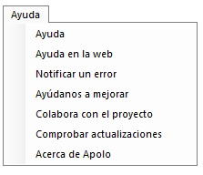
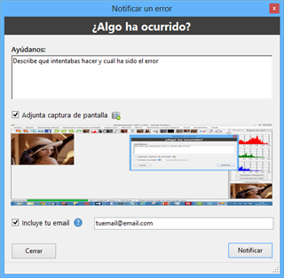
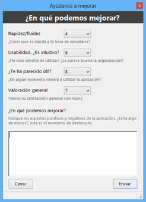
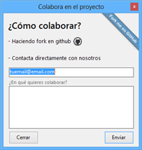

Última opción de la barra superior de herramientas. En la siguiente ilustración se muestra el menú.

Ilustración 1. Menú ayuda.


Se compone de las opciones básicas de ayuda para Apolo.
Abre la ayuda de Apolo en formato chm.
Abre la ayuda de Apolo en su navegador predeterminado.
Muestra un cuadro de diálogo donde se puede informar el equipo de desarrolladores de un error existente en Apolo. El formulario se muestra a continuación.

Ilustración 2. Notificar error.


Como puede observarse en la ilustración anterior, hay un campo en el que poder explicar cómo ha ocurrido el error y en qué le ha afectado. Además hay una opción para adjuntar una captura de pantalla, siendo esto de gran ayuda si el error es visual. Si se selecciona la opción de incluir email, se mantendrá informado al usuario de los avances y detección del error.
Apolo mantiene sus datos a salvo, no se preocupe, su email no será destinado a ningún fin más que mantenerle informado del error. Sus datos no se almacenarán en ningún sitio.
En este menú se muestra una pequeña encuesta que se puede rellenar para fomentar la interactividad con el usuario final y así poder adecuar Apolo a las necesidades del usuario.

Ilustración 3. Encuesta Apolo.


Si contesta esta encuesta, Apolo y todo el proyecto se lo agradecerá.
Informa de los métodos para colaborar de forma activa con el proyecto.

Ilustración 4. Menú colaboración.


Se puede colaborar rellenando directamente el formulario, o pulsando en alguna de las dos imágenes que abrirán su navegador en la ventana principal del proyecto en Github.
Una vez se ha seleccionado esta función, tras unos instantes se mostrará un cuadro de diálogo informando si hay alguna actualización disponible.
En caso de haber actualizaciones, se da la opción de descargarlas e instalar en ese mismo momento.
Abre el cuadro de diálogo con la información básica de Apolo (versión, autores, etc.). Además se detecta la versión de Apolo y, en caso de haber una nueva versión, se exponen sus mejores y aparece la opción de descargarla.

Ilustración 5. Menú Acerca de Apolo.
Created with the Personal Edition of HelpNDoc: Free HTML Help documentation generator